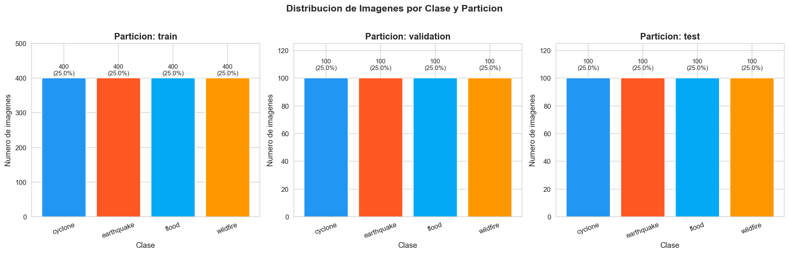
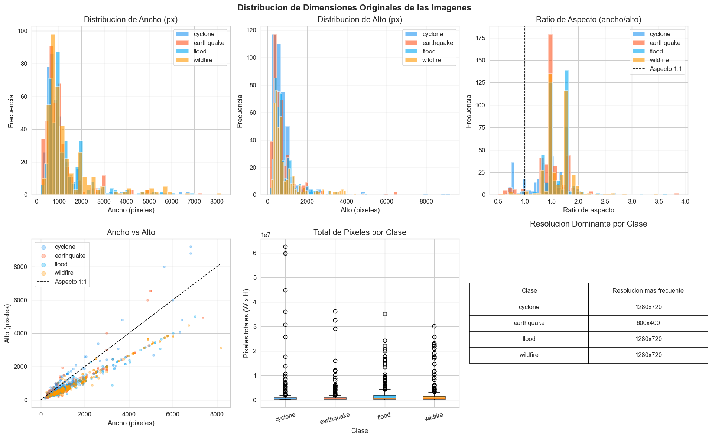
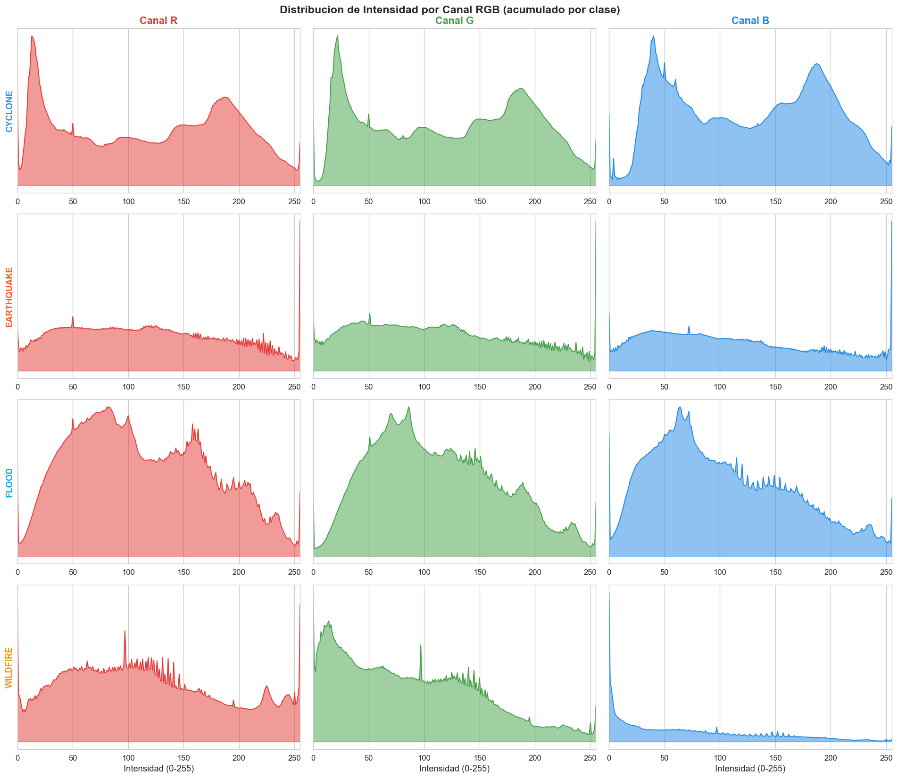
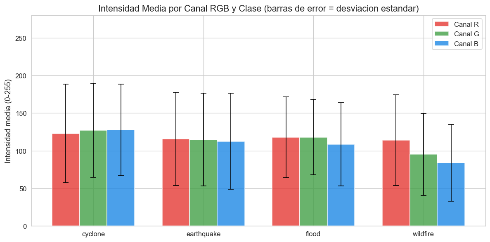
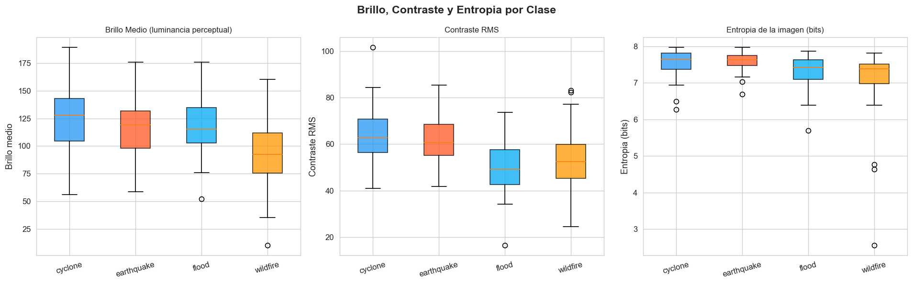
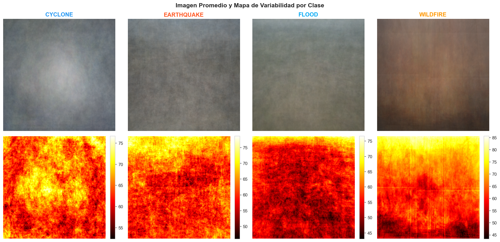
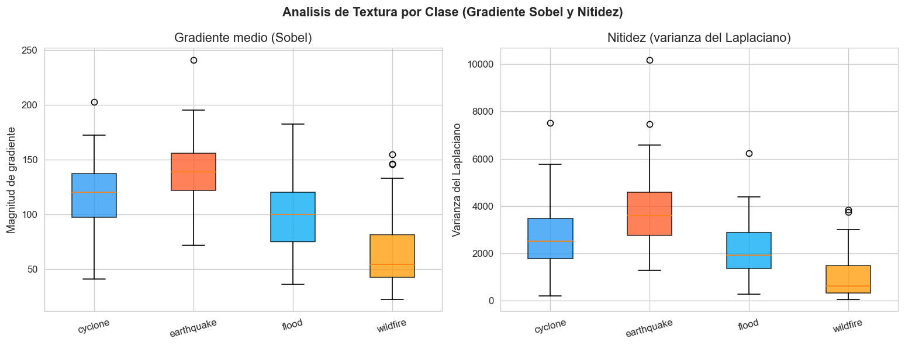
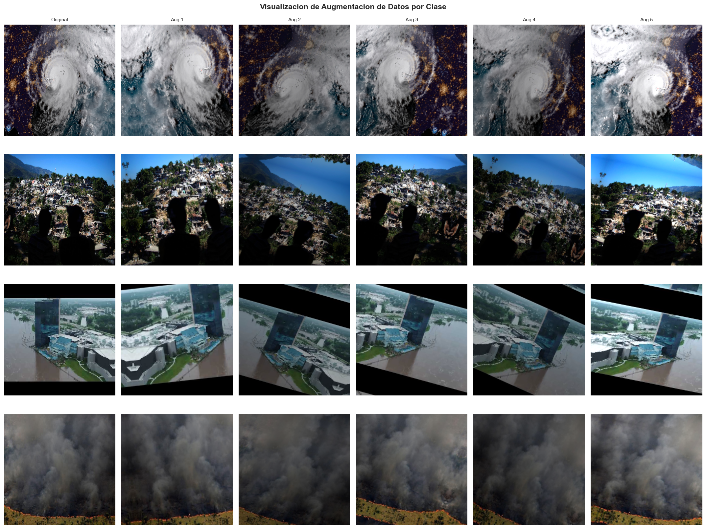

Analisis Exploratorio de Datos#
Clasificacion de Desastres Naturales mediante Imagenes#
Dataset: Cyclone Wildfire Flood Earthquake Dataset (mikolajbabula, Kaggle)#
Luis David Peñaranda#
Descripcion del problema
Colombia es uno de los paises de America Latina con mayor exposicion a eventos de desastre natural. Segun la Unidad Nacional para la Gestion del Riesgo de Desastres (UNGRD), las inundaciones y los movimientos en masa son los fenomenos de mayor recurrencia, afectando anualmente a decenas de miles de personas en cuencas como el rio Magdalena y el rio Cauca. A nivel tectonico, el pais se encuentra sobre el Cinturon de Fuego del Pacifico, lo que lo expone a actividad sismica de consideracion. En este contexto, el desarrollo de sistemas automatizados de clasificacion de imagenes de desastre tiene un valor practico directo para la gestion de emergencias.
El presente analisis exploratorio busca caracterizar en profundidad el dataset antes de entrenar cualquier modelo, identificando propiedades estadisticas, visuales y estructurales que orienten decisiones de preprocesamiento, augmentacion y arquitectura.
Clases del dataset:
cyclone: Imagenes de ciclones tropicales y huracanesearthquake: Imagenes de zonas afectadas por terremotosflood: Imagenes de zonas inundadaswildfire: Imagenes de incendios forestales
Estructura del dataset:
Particiones:
train,validation,testFormato de imagen: JPG/PNG
Tarea: Clasificacion multiclase (4 clases)
0. Configuracion e Importaciones#
import os
import random
import warnings
import numpy as np
import pandas as pd
import matplotlib.pyplot as plt
import matplotlib.gridspec as gridspec
import seaborn as sns
from PIL import Image
from pathlib import Path
from collections import defaultdict
from scipy import stats
import cv2
warnings.filterwarnings('ignore')
# Reproducibilidad
SEED = 42
random.seed(SEED)
np.random.seed(SEED)
# Configuracion de visualizacion
plt.rcParams['figure.dpi'] = 120
plt.rcParams['font.family'] = 'DejaVu Sans'
plt.rcParams['axes.titlesize'] = 13
plt.rcParams['axes.labelsize'] = 11
plt.rcParams['xtick.labelsize'] = 10
plt.rcParams['ytick.labelsize'] = 10
sns.set_style('whitegrid')
print('Librerias cargadas correctamente.')
Librerias cargadas correctamente.
# --- CONFIGURACION DE RUTAS ---
BASE_DIR = Path('../Datasets/DisasterModel/Cyclone_Wildfire_Flood_Earthquake_Dataset')
COLORES_CLASES = {
'Cyclone': '#2196F3',
'Earthquake': '#FF5722',
'Flood': '#03A9F4',
'Wildfire': '#FF9800'
}
BASE_DIR = Path('../Datasets/DisasterModel/Cyclone_Wildfire_Flood_Earthquake_Dataset')
TRAIN_DIR = Path('../Datasets/DisasterModel/train')
VAL_DIR = Path('../Datasets/DisasterModel/validation')
TEST_DIR = Path('../Datasets/DisasterModel/test')
CLASES = sorted([d.name for d in TRAIN_DIR.iterdir() if d.is_dir()])
PARTICIONES = {'train': TRAIN_DIR, 'validation': VAL_DIR, 'test': TEST_DIR}
print(f'Directorio base: {BASE_DIR}')
print(f'Clases detectadas: {CLASES}')
print(f'Existe train: {TRAIN_DIR.exists()}')
print(f'Existe validation: {VAL_DIR.exists()}')
print(f'Existe test: {TEST_DIR.exists()}')
Directorio base: ..\Datasets\DisasterModel\Cyclone_Wildfire_Flood_Earthquake_Dataset
Clases detectadas: ['cyclone', 'earthquake', 'flood', 'wildfire']
Existe train: True
Existe validation: True
Existe test: True
1. Inventario General del Dataset#
EXTENSIONES_VALIDAS = {'.jpg', '.jpeg', '.png', '.bmp', '.tiff'}
def contar_imagenes(directorio):
"""Cuenta imagenes por clase en un directorio dado."""
conteo = {}
for clase in CLASES:
clase_dir = directorio / clase
if clase_dir.exists():
archivos = [f for f in clase_dir.iterdir()
if f.suffix.lower() in EXTENSIONES_VALIDAS]
conteo[clase] = len(archivos)
else:
conteo[clase] = 0
return conteo
conteos = {p: contar_imagenes(d) for p, d in PARTICIONES.items()}
df_conteos = pd.DataFrame(conteos).T
df_conteos['Total'] = df_conteos.sum(axis=1)
# Totales por clase
totales_clase = df_conteos[CLASES].sum()
total_global = totales_clase.sum()
print('=== INVENTARIO DEL DATASET ===')
print(df_conteos.to_string())
print(f'\nTotal global de imagenes: {total_global}')
print('\nTotal por clase:')
for clase, n in totales_clase.items():
print(f' {clase:12s}: {n:5d} ({100*n/total_global:.1f}%)')
=== INVENTARIO DEL DATASET ===
cyclone earthquake flood wildfire Total
train 400 400 400 400 1600
validation 100 100 100 100 400
test 100 100 100 100 400
Total global de imagenes: 2400
Total por clase:
cyclone : 600 (25.0%)
earthquake : 600 (25.0%)
flood : 600 (25.0%)
wildfire : 600 (25.0%)
El dataset contiene 2,400 imágenes en total, distribuidas en tres particiones: 1,600 para entrenamiento (66.7%), 400 para validación (16.7%) y 400 para prueba (16.7%). Cada clase cuenta con exactamente 600 imágenes en total (400 train / 100 val / 100 test), lo que representa el 25% del dataset por clase. La proporción 67/17/17 es estándar en aprendizaje profundo y suficiente para entrenamiento con augmentación.
2. Distribucion de Clases#
COLORES_CLASES = {
'cyclone': '#2196F3',
'earthquake': '#FF5722',
'flood': '#03A9F4',
'wildfire': '#FF9800'
}
fig, axes = plt.subplots(1, 3, figsize=(16, 5))
fig.suptitle('Distribucion de Imagenes por Clase y Particion', fontsize=14, fontweight='bold', y=1.02)
for ax, (particion, dir_p) in zip(axes, PARTICIONES.items()):
conteo = conteos[particion]
clases_list = list(conteo.keys())
valores = list(conteo.values())
colores = [COLORES_CLASES[c] for c in clases_list]
barras = ax.bar(clases_list, valores, color=colores, edgecolor='white', linewidth=0.8)
ax.set_title(f'Particion: {particion}', fontweight='bold')
ax.set_ylabel('Numero de imagenes')
ax.set_xlabel('Clase')
ax.tick_params(axis='x', rotation=20)
total_p = sum(valores)
for barra, val in zip(barras, valores):
ax.text(barra.get_x() + barra.get_width()/2, barra.get_height() + 5,
f'{val}\n({100*val/total_p:.1f}%)',
ha='center', va='bottom', fontsize=9)
ax.set_ylim(0, max(valores) * 1.25)
plt.tight_layout()
plt.savefig('eda_01_distribucion_clases.png', bbox_inches='tight')
plt.show()
print('Figura guardada: eda_01_distribucion_clases.png')

Figura guardada: eda_01_distribucion_clases.png
# Balance del dataset - ratio de desbalance
print('=== ANALISIS DE BALANCE ===')
for particion, conteo in conteos.items():
valores = list(conteo.values())
ratio = max(valores) / min(valores) if min(valores) > 0 else float('inf')
print(f'\nParticion: {particion}')
print(f' Clase con mas imagenes: {max(conteo, key=conteo.get)} ({max(valores)})')
print(f' Clase con menos imagenes:{min(conteo, key=conteo.get)} ({min(valores)})')
print(f' Ratio de desbalance: {ratio:.2f}x')
if ratio < 1.2:
print(' Evaluacion: Dataset balanceado.')
elif ratio < 2.0:
print(' Evaluacion: Desbalance leve. Puede requerir class weights.')
else:
print(' Evaluacion: Desbalance significativo. Se recomienda oversampling o class weights.')
=== ANALISIS DE BALANCE ===
Particion: train
Clase con mas imagenes: cyclone (400)
Clase con menos imagenes:cyclone (400)
Ratio de desbalance: 1.00x
Evaluacion: Dataset balanceado.
Particion: validation
Clase con mas imagenes: cyclone (100)
Clase con menos imagenes:cyclone (100)
Ratio de desbalance: 1.00x
Evaluacion: Dataset balanceado.
Particion: test
Clase con mas imagenes: cyclone (100)
Clase con menos imagenes:cyclone (100)
Ratio de desbalance: 1.00x
Evaluacion: Dataset balanceado.
El dataset presenta un balance perfecto: ratio de desbalance de 1.00x en las tres particiones. Cada clase tiene exactamente el mismo número de imágenes en train, validación y test. Este diseño elimina la necesidad de técnicas de compensación como class_weight, oversampling o SMOTE, y garantiza que el accuracy sea una métrica representativa del desempeño real del modelo sin sesgos por desbalance.
3. Muestras Visuales por Clase#
DESCRIPCIONES = {
'cyclone': 'Ciclones tropicales. Predominan vistas satelitales de sistemas de nubes en espiral. '
'Relevancia regional: efectos indirectos sobre el Caribe colombiano.',
'earthquake':'Terremotos. Muestran colapso estructural, grietas en vias e infraestructura danada. '
'Alta relevancia: Colombia esta sobre el Cinturon de Fuego del Pacifico.',
'flood': 'Inundaciones. Zonas urbanas y rurales anegadas. '
'Maxima relevancia: fenomeno mas recurrente en Colombia (cuencas Magdalena y Cauca).',
'wildfire': 'Incendios forestales. Humo, vegetacion ardiendo, zonas quemadas. '
'Relevancia creciente: Orinoquía y Amazonia colombiana.'
}
N_MUESTRAS = 5
fig, axes = plt.subplots(len(CLASES), N_MUESTRAS, figsize=(18, 14))
fig.suptitle('Muestras Representativas por Clase (Particion: Train)', fontsize=14, fontweight='bold')
for i, clase in enumerate(CLASES):
clase_dir = TRAIN_DIR / clase
imagenes = [f for f in clase_dir.iterdir() if f.suffix.lower() in EXTENSIONES_VALIDAS]
muestras = random.sample(imagenes, min(N_MUESTRAS, len(imagenes)))
for j, img_path in enumerate(muestras):
img = Image.open(img_path).convert('RGB')
axes[i][j].imshow(img)
axes[i][j].axis('off')
if j == 0:
axes[i][j].set_ylabel(clase.upper(), fontsize=11, fontweight='bold',
color=COLORES_CLASES[clase], rotation=90, labelpad=60)
# Descripcion debajo de cada fila
fig.text(0.5, 1 - (i + 1) * (1 / len(CLASES)) + 0.01,
DESCRIPCIONES[clase], ha='center', fontsize=8, style='italic', color='#444444')
plt.tight_layout()
plt.savefig('eda_02_muestras_por_clase.png', bbox_inches='tight')
plt.show()
print('Figura guardada: eda_02_muestras_por_clase.png')

Figura guardada: eda_02_muestras_por_clase.png
4. Analisis de Dimensiones Originales#
print('Recopilando dimensiones de imagenes (particion train)...')
registros = []
for clase in CLASES:
clase_dir = TRAIN_DIR / clase
imagenes = [f for f in clase_dir.iterdir() if f.suffix.lower() in EXTENSIONES_VALIDAS]
for img_path in imagenes:
try:
with Image.open(img_path) as img:
w, h = img.size
modo = img.mode
canales = len(img.getbands())
registros.append({
'clase': clase,
'ancho': w,
'alto': h,
'aspecto': round(w / h, 3),
'pixeles_total': w * h,
'modo': modo,
'canales': canales
})
except Exception as e:
print(f'Error en {img_path.name}: {e}')
df_dims = pd.DataFrame(registros)
print(f'Total de imagenes analizadas: {len(df_dims)}')
print('\nEstadisticas generales de dimensiones:')
print(df_dims[['ancho', 'alto', 'aspecto', 'pixeles_total']].describe().round(2))
Recopilando dimensiones de imagenes (particion train)...
Total de imagenes analizadas: 1600
Estadisticas generales de dimensiones:
ancho alto aspecto pixeles_total
count 1600.00 1600.00 1600.00 1600.00
mean 1215.51 827.36 1.54 1734445.08
std 1004.72 788.38 0.31 4488456.17
min 200.00 113.00 0.51 22600.00
25% 650.00 424.00 1.42 274644.75
50% 931.00 600.00 1.50 547230.00
75% 1280.00 900.00 1.78 1080000.00
max 8192.00 9200.00 3.88 62560000.00
# Dimensiones por clase
print('\nDimensiones promedio por clase:')
resumen_dims = df_dims.groupby('clase')[['ancho', 'alto', 'aspecto']].agg(['mean', 'std', 'min', 'max'])
print(resumen_dims.round(1))
# Modos de color
print('\nDistribucion de modos de color:')
print(df_dims['modo'].value_counts())
Dimensiones promedio por clase:
ancho alto aspecto \
mean std min max mean std min max mean std
clase
cyclone 1056.6 886.5 300 6800 818.2 923.2 225 9200 1.4 0.4
earthquake 1055.3 849.3 226 7360 746.0 742.6 141 6541 1.5 0.3
flood 1346.0 1010.0 200 6999 854.5 675.1 113 5020 1.6 0.3
wildfire 1404.1 1189.3 260 8192 890.8 787.2 191 4480 1.6 0.3
min max
clase
cyclone 0.6 2.7
earthquake 0.5 3.9
flood 0.7 3.7
wildfire 0.6 3.5
Distribucion de modos de color:
modo
RGB 1600
Name: count, dtype: int64
fig, axes = plt.subplots(2, 3, figsize=(16, 10))
fig.suptitle('Distribucion de Dimensiones Originales de las Imagenes', fontsize=14, fontweight='bold')
# Ancho
for clase in CLASES:
subset = df_dims[df_dims['clase'] == clase]
axes[0][0].hist(subset['ancho'], bins=40, alpha=0.6, label=clase, color=COLORES_CLASES[clase])
axes[0][0].set_title('Distribucion de Ancho (px)')
axes[0][0].set_xlabel('Ancho (pixeles)')
axes[0][0].set_ylabel('Frecuencia')
axes[0][0].legend()
# Alto
for clase in CLASES:
subset = df_dims[df_dims['clase'] == clase]
axes[0][1].hist(subset['alto'], bins=40, alpha=0.6, label=clase, color=COLORES_CLASES[clase])
axes[0][1].set_title('Distribucion de Alto (px)')
axes[0][1].set_xlabel('Alto (pixeles)')
axes[0][1].set_ylabel('Frecuencia')
axes[0][1].legend()
# Ratio de aspecto
for clase in CLASES:
subset = df_dims[df_dims['clase'] == clase]
axes[0][2].hist(subset['aspecto'], bins=40, alpha=0.6, label=clase, color=COLORES_CLASES[clase])
axes[0][2].axvline(1.0, color='black', linestyle='--', linewidth=1, label='Aspecto 1:1')
axes[0][2].set_title('Ratio de Aspecto (ancho/alto)')
axes[0][2].set_xlabel('Ratio de aspecto')
axes[0][2].set_ylabel('Frecuencia')
axes[0][2].legend()
# Scatter ancho vs alto
for clase in CLASES:
subset = df_dims[df_dims['clase'] == clase]
axes[1][0].scatter(subset['ancho'], subset['alto'], alpha=0.3, s=10,
label=clase, color=COLORES_CLASES[clase])
axes[1][0].plot([0, df_dims['ancho'].max()], [0, df_dims['ancho'].max()],
'k--', linewidth=1, label='Aspecto 1:1')
axes[1][0].set_title('Ancho vs Alto')
axes[1][0].set_xlabel('Ancho (pixeles)')
axes[1][0].set_ylabel('Alto (pixeles)')
axes[1][0].legend(markerscale=2)
# Pixeles totales por clase (boxplot)
datos_box = [df_dims[df_dims['clase'] == c]['pixeles_total'].values for c in CLASES]
bp = axes[1][1].boxplot(datos_box, patch_artist=True, labels=CLASES)
for patch, clase in zip(bp['boxes'], CLASES):
patch.set_facecolor(COLORES_CLASES[clase])
patch.set_alpha(0.7)
axes[1][1].set_title('Total de Pixeles por Clase')
axes[1][1].set_xlabel('Clase')
axes[1][1].set_ylabel('Pixeles totales (W x H)')
axes[1][1].tick_params(axis='x', rotation=15)
# Resolucion mas frecuente por clase
df_dims['resolucion'] = df_dims['ancho'].astype(str) + 'x' + df_dims['alto'].astype(str)
top_res = df_dims.groupby('clase')['resolucion'].agg(lambda x: x.value_counts().index[0])
axes[1][2].axis('off')
tabla_data = [[clase, res] for clase, res in top_res.items()]
tabla = axes[1][2].table(
cellText=tabla_data,
colLabels=['Clase', 'Resolucion mas frecuente'],
loc='center', cellLoc='center'
)
tabla.auto_set_font_size(False)
tabla.set_fontsize(10)
tabla.scale(1.2, 2)
axes[1][2].set_title('Resolucion Dominante por Clase', pad=20)
plt.tight_layout()
plt.savefig('eda_03_dimensiones.png', bbox_inches='tight')
plt.show()
print('Figura guardada: eda_03_dimensiones.png')

Figura guardada: eda_03_dimensiones.png
Las imágenes presentan alta variabilidad en resolución. El ancho promedio es de 1,216px (±1,005px) y el alto promedio de 827px (±788px), con valores extremos desde 200px hasta 8,192px de ancho. El ratio de aspecto promedio es 1.54, consistente con fotografías horizontales estándar. Todas las imágenes están en modo RGB. Esta heterogeneidad de resoluciones es esperable en un dataset construido desde múltiples fuentes (satélites, drones, redes sociales), y hace indispensable un redimensionamiento uniforme antes del entrenamiento. Se recomienda 224x224px por compatibilidad con arquitecturas preentrenadas como VGG16, ResNet50 y EfficientNet.
Por clase: wildfire y flood tienden a tener imágenes más anchas (ancho medio ~1,350-1,404px), mientras cyclone y earthquake tienen resoluciones ligeramente menores. Sin embargo, las diferencias no son suficientemente sistemáticas para aportar señal discriminativa, por lo que el redimensionamiento no genera pérdida de información relevante.
5. Analisis de Canales de Color (RGB)#
N_MUESTRAS_COLOR = 80 # imagenes por clase para analisis de color
print(f'Analizando distribucion de canales RGB ({N_MUESTRAS_COLOR} imagenes por clase)...')
histogramas_rgb = {clase: {'R': np.zeros(256), 'G': np.zeros(256), 'B': np.zeros(256)}
for clase in CLASES}
stats_por_clase = []
for clase in CLASES:
clase_dir = TRAIN_DIR / clase
imagenes = [f for f in clase_dir.iterdir() if f.suffix.lower() in EXTENSIONES_VALIDAS]
muestras = random.sample(imagenes, min(N_MUESTRAS_COLOR, len(imagenes)))
medias_r, medias_g, medias_b = [], [], []
stds_r, stds_g, stds_b = [], [], []
for img_path in muestras:
try:
img = np.array(Image.open(img_path).convert('RGB'))
for canal_idx, canal_name in enumerate(['R', 'G', 'B']):
canal = img[:, :, canal_idx].flatten()
hist, _ = np.histogram(canal, bins=256, range=(0, 256))
histogramas_rgb[clase][canal_name] += hist
medias_r.append(img[:, :, 0].mean())
medias_g.append(img[:, :, 1].mean())
medias_b.append(img[:, :, 2].mean())
stds_r.append(img[:, :, 0].std())
stds_g.append(img[:, :, 1].std())
stds_b.append(img[:, :, 2].std())
except Exception:
continue
stats_por_clase.append({
'clase': clase,
'media_R': np.mean(medias_r), 'std_R': np.mean(stds_r),
'media_G': np.mean(medias_g), 'std_G': np.mean(stds_g),
'media_B': np.mean(medias_b), 'std_B': np.mean(stds_b),
})
df_stats_color = pd.DataFrame(stats_por_clase).set_index('clase')
print('\nEstadisticas promedio de canales RGB por clase:')
print(df_stats_color.round(2))
Analizando distribucion de canales RGB (80 imagenes por clase)...
Estadisticas promedio de canales RGB por clase:
media_R std_R media_G std_G media_B std_B
clase
cyclone 122.88 65.45 127.12 62.27 127.91 60.87
earthquake 115.79 61.85 114.89 61.66 112.64 63.76
flood 117.98 53.82 118.13 50.00 108.68 55.14
wildfire 114.08 60.26 95.26 54.39 83.94 50.74
fig, axes = plt.subplots(len(CLASES), 3, figsize=(16, 14))
fig.suptitle('Distribucion de Intensidad por Canal RGB (acumulado por clase)', fontsize=14, fontweight='bold')
canal_colores = {'R': '#e53935', 'G': '#43a047', 'B': '#1e88e5'}
x = np.arange(256)
for i, clase in enumerate(CLASES):
for j, canal in enumerate(['R', 'G', 'B']):
hist = histogramas_rgb[clase][canal]
hist_norm = hist / hist.sum()
axes[i][j].fill_between(x, hist_norm, alpha=0.5, color=canal_colores[canal])
axes[i][j].plot(x, hist_norm, color=canal_colores[canal], linewidth=1)
axes[i][j].set_xlim(0, 255)
if j == 0:
axes[i][j].set_ylabel(clase.upper(), fontweight='bold', color=COLORES_CLASES[clase])
if i == 0:
axes[i][j].set_title(f'Canal {canal}', fontweight='bold', color=canal_colores[canal])
if i == len(CLASES) - 1:
axes[i][j].set_xlabel('Intensidad (0-255)')
axes[i][j].set_yticks([])
plt.tight_layout()
plt.savefig('eda_04_canales_rgb.png', bbox_inches='tight')
plt.show()
print('Figura guardada: eda_04_canales_rgb.png')

Figura guardada: eda_04_canales_rgb.png
# Comparacion de medias de canales entre clases
fig, ax = plt.subplots(figsize=(10, 5))
x_pos = np.arange(len(CLASES))
ancho = 0.25
for k, (canal, color) in enumerate(canal_colores.items()):
medias = [df_stats_color.loc[clase, f'media_{canal}'] for clase in CLASES]
stds = [df_stats_color.loc[clase, f'std_{canal}'] for clase in CLASES]
ax.bar(x_pos + k * ancho, medias, ancho, yerr=stds, label=f'Canal {canal}',
color=color, alpha=0.8, capsize=4, error_kw={'linewidth': 1})
ax.set_xticks(x_pos + ancho)
ax.set_xticklabels(CLASES)
ax.set_ylabel('Intensidad media (0-255)')
ax.set_title('Intensidad Media por Canal RGB y Clase (barras de error = desviacion estandar)')
ax.legend()
ax.set_ylim(0, 280)
plt.tight_layout()
plt.savefig('eda_04b_medias_rgb.png', bbox_inches='tight')
plt.show()
print('Figura guardada: eda_04b_medias_rgb.png')

Figura guardada: eda_04b_medias_rgb.png
Los perfiles de color por canal revelan diferencias consistentes entre clases:
Wildfire: canal R (114.1) significativamente más alto que G (95.3) y B (83.9), reflejando la dominancia del rojo y naranja en imágenes de fuego y humo.
Cyclone: los tres canales son similares entre sí (R=122.9, G=127.1, B=127.9), consistente con las tonalidades grises y blancas de imágenes satelitales de sistemas nubosos.
Flood: canal B (108.7) más bajo que R y G (≈118), reflejando la mezcla de agua turbia marrón con zonas verdes de vegetación parcialmente inundada.
Earthquake: los tres canales son relativamente bajos y similares (R=115.8, G=114.9, B=112.6), coherente con escenas de escombros, polvo y estructuras colapsadas.
Estas diferencias en el perfil cromático indican que el color es una característica discriminativa relevante, especialmente para wildfire. Un CNN con capas convolucionales debería capturar estos patrones en las primeras capas.
6. Analisis de Brillo y Contraste#
print('Calculando brillo y contraste por clase...')
registros_brillo = []
for clase in CLASES:
clase_dir = TRAIN_DIR / clase
imagenes = [f for f in clase_dir.iterdir() if f.suffix.lower() in EXTENSIONES_VALIDAS]
muestras = random.sample(imagenes, min(N_MUESTRAS_COLOR, len(imagenes)))
for img_path in muestras:
try:
img_rgb = np.array(Image.open(img_path).convert('RGB'))
# Brillo: luminancia perceptual ponderada
brillo = (0.299 * img_rgb[:,:,0] +
0.587 * img_rgb[:,:,1] +
0.114 * img_rgb[:,:,2])
# Contraste RMS
contraste_rms = brillo.std()
# Entropia
img_gray = np.array(Image.open(img_path).convert('L'))
hist_e, _ = np.histogram(img_gray.flatten(), bins=256, range=(0,256), density=True)
hist_e = hist_e[hist_e > 0]
entropia = -np.sum(hist_e * np.log2(hist_e))
registros_brillo.append({
'clase': clase,
'brillo_medio': brillo.mean(),
'contraste_rms': contraste_rms,
'entropia': entropia
})
except Exception:
continue
df_brillo = pd.DataFrame(registros_brillo)
print('\nResumen de brillo, contraste y entropia por clase:')
print(df_brillo.groupby('clase')[['brillo_medio', 'contraste_rms', 'entropia']].describe().round(2))
Calculando brillo y contraste por clase...
Resumen de brillo, contraste y entropia por clase:
brillo_medio \
count mean std min 25% 50% 75% max
clase
cyclone 80.0 123.91 28.76 55.78 104.27 128.03 142.83 189.33
earthquake 80.0 115.48 25.03 58.76 97.93 119.37 131.87 175.76
flood 80.0 117.70 22.84 52.16 102.90 115.25 134.58 176.10
wildfire 80.0 93.80 29.39 9.88 75.56 92.49 111.76 160.11
contraste_rms ... entropia \
count mean ... 75% max count mean std
clase ...
cyclone 80.0 63.29 ... 70.69 101.55 80.0 7.56 0.32
earthquake 80.0 61.46 ... 68.50 85.26 80.0 7.60 0.23
flood 80.0 50.08 ... 57.61 73.58 80.0 7.34 0.38
wildfire 80.0 51.79 ... 59.99 83.04 80.0 7.16 0.75
min 25% 50% 75% max
clase
cyclone 6.27 7.38 7.64 7.81 7.97
earthquake 6.69 7.48 7.64 7.76 7.98
flood 5.70 7.09 7.42 7.64 7.86
wildfire 2.55 6.98 7.38 7.52 7.82
[4 rows x 24 columns]
fig, axes = plt.subplots(1, 3, figsize=(16, 5))
fig.suptitle('Brillo, Contraste y Entropia por Clase', fontsize=14, fontweight='bold')
metricas = [
('brillo_medio', 'Brillo Medio (luminancia perceptual)', 'Brillo medio'),
('contraste_rms', 'Contraste RMS', 'Contraste RMS'),
('entropia', 'Entropia de la imagen (bits)', 'Entropia (bits)')
]
for ax, (metrica, titulo, ylabel) in zip(axes, metricas):
datos = [df_brillo[df_brillo['clase'] == c][metrica].values for c in CLASES]
bp = ax.boxplot(datos, patch_artist=True, labels=CLASES, notch=False)
for patch, clase in zip(bp['boxes'], CLASES):
patch.set_facecolor(COLORES_CLASES[clase])
patch.set_alpha(0.75)
ax.set_title(titulo, fontsize=10)
ax.set_ylabel(ylabel)
ax.tick_params(axis='x', rotation=15)
plt.tight_layout()
plt.savefig('eda_05_brillo_contraste_entropia.png', bbox_inches='tight')
plt.show()
print('Figura guardada: eda_05_brillo_contraste_entropia.png')

Figura guardada: eda_05_brillo_contraste_entropia.png
El análisis de brillo (luminancia perceptual ponderada) muestra que wildfire es la clase con menor brillo medio (93.8), resultado esperable dado el predominio de zonas oscuras por humo y vegetación quemada. Cyclone es la más brillante (123.9), consistente con imágenes satelitales de alta reflectancia nubosa.
En contraste RMS (medida de variabilidad interna de la imagen), cyclone y earthquake presentan los valores más altos (63.3 y 61.5), indicando mayor heterogeneidad interna — escenas con regiones muy claras y muy oscuras coexistiendo. Flood y wildfire muestran contraste más bajo (50.1 y 51.8), sugiriendo escenas más homogéneas en términos de luminancia.
La entropía, que mide la complejidad informacional de la imagen, es mayor en cyclone y earthquake (7.56 y 7.60 bits) y menor en wildfire (7.16 bits, con mayor dispersión). La alta varianza de entropía en wildfire (std=0.75) refleja la diversidad entre imágenes de esa clase: desde escenas densas en humo hasta vistas aéreas con patrones complejos de quema.
7. Imagen Promedio por Clase#
TAMANO_PROMEDIO = (224, 224)
N_PROMEDIO = 100
print(f'Calculando imagen promedio por clase ({N_PROMEDIO} imagenes, {TAMANO_PROMEDIO}px)...')
imagenes_promedio = {}
imagenes_std = {}
for clase in CLASES:
clase_dir = TRAIN_DIR / clase
imagenes = [f for f in clase_dir.iterdir() if f.suffix.lower() in EXTENSIONES_VALIDAS]
muestras = random.sample(imagenes, min(N_PROMEDIO, len(imagenes)))
acum = np.zeros((*TAMANO_PROMEDIO, 3), dtype=np.float64)
acum_sq = np.zeros((*TAMANO_PROMEDIO, 3), dtype=np.float64)
n_validas = 0
for img_path in muestras:
try:
img = np.array(Image.open(img_path).convert('RGB').resize(
TAMANO_PROMEDIO, Image.LANCZOS), dtype=np.float64)
acum += img
acum_sq += img ** 2
n_validas += 1
except Exception:
continue
if n_validas > 0:
promedio = acum / n_validas
varianza = acum_sq / n_validas - promedio ** 2
imagenes_promedio[clase] = np.clip(promedio, 0, 255).astype(np.uint8)
imagenes_std[clase] = np.clip(np.sqrt(np.maximum(varianza, 0)), 0, 255).astype(np.uint8)
print(f' {clase}: {n_validas} imagenes procesadas.')
print('Calculo completado.')
Calculando imagen promedio por clase (100 imagenes, (224, 224)px)...
cyclone: 100 imagenes procesadas.
earthquake: 100 imagenes procesadas.
flood: 100 imagenes procesadas.
wildfire: 100 imagenes procesadas.
Calculo completado.
fig, axes = plt.subplots(2, len(CLASES), figsize=(16, 8))
fig.suptitle('Imagen Promedio y Mapa de Variabilidad por Clase', fontsize=14, fontweight='bold')
for j, clase in enumerate(CLASES):
axes[0][j].imshow(imagenes_promedio[clase])
axes[0][j].set_title(clase.upper(), fontweight='bold', color=COLORES_CLASES[clase])
axes[0][j].axis('off')
if j == 0:
axes[0][j].set_ylabel('Imagen promedio', fontsize=10)
std_gray = imagenes_std[clase].mean(axis=2)
im = axes[1][j].imshow(std_gray, cmap='hot')
axes[1][j].axis('off')
if j == 0:
axes[1][j].set_ylabel('Mapa de variabilidad', fontsize=10)
plt.colorbar(im, ax=axes[1][j], fraction=0.046, pad=0.04)
plt.tight_layout()
plt.savefig('eda_06_imagen_promedio.png', bbox_inches='tight')
plt.show()
print('Figura guardada: eda_06_imagen_promedio.png')

Figura guardada: eda_06_imagen_promedio.png
8. Analisis de Textura (Gradientes)#
print('Calculando estadisticas de gradiente (textura) por clase...')
registros_textura = []
for clase in CLASES:
clase_dir = TRAIN_DIR / clase
imagenes = [f for f in clase_dir.iterdir() if f.suffix.lower() in EXTENSIONES_VALIDAS]
muestras = random.sample(imagenes, min(60, len(imagenes)))
for img_path in muestras:
try:
img_gray = np.array(Image.open(img_path).convert('L').resize((128, 128)))
# Gradiente Sobel
gx = cv2.Sobel(img_gray, cv2.CV_64F, 1, 0, ksize=3)
gy = cv2.Sobel(img_gray, cv2.CV_64F, 0, 1, ksize=3)
magnitud = np.sqrt(gx**2 + gy**2)
# Laplaciano (medida de nitidez/enfoque)
laplaciano = cv2.Laplacian(img_gray, cv2.CV_64F).var()
registros_textura.append({
'clase': clase,
'gradiente_medio': magnitud.mean(),
'gradiente_std': magnitud.std(),
'nitidez_laplaciano': laplaciano
})
except Exception:
continue
df_textura = pd.DataFrame(registros_textura)
print('\nResumen de textura por clase:')
print(df_textura.groupby('clase').agg({'gradiente_medio': ['mean', 'std'],
'nitidez_laplaciano': ['mean', 'std']}).round(2))
Calculando estadisticas de gradiente (textura) por clase...
Resumen de textura por clase:
gradiente_medio nitidez_laplaciano
mean std mean std
clase
cyclone 118.36 29.56 2729.61 1344.51
earthquake 139.10 29.80 3914.41 1653.35
flood 99.66 31.41 2118.37 1180.99
wildfire 66.03 32.61 990.01 894.05
fig, axes = plt.subplots(1, 2, figsize=(13, 5))
fig.suptitle('Analisis de Textura por Clase (Gradiente Sobel y Nitidez)', fontsize=13, fontweight='bold')
metricas_tex = [
('gradiente_medio', 'Gradiente medio (Sobel)', 'Magnitud de gradiente'),
('nitidez_laplaciano', 'Nitidez (varianza del Laplaciano)', 'Varianza del Laplaciano')
]
for ax, (metrica, titulo, ylabel) in zip(axes, metricas_tex):
datos = [df_textura[df_textura['clase'] == c][metrica].values for c in CLASES]
bp = ax.boxplot(datos, patch_artist=True, labels=CLASES)
for patch, clase in zip(bp['boxes'], CLASES):
patch.set_facecolor(COLORES_CLASES[clase])
patch.set_alpha(0.75)
ax.set_title(titulo)
ax.set_ylabel(ylabel)
ax.tick_params(axis='x', rotation=15)
plt.tight_layout()
plt.savefig('eda_07_textura.png', bbox_inches='tight')
plt.show()
print('Figura guardada: eda_07_textura.png')

Figura guardada: eda_07_textura.png
9. Visualizacion de Augmentacion de Datos#
from tensorflow.keras.preprocessing.image import ImageDataGenerator, img_to_array, load_img
# Seleccionar una imagen de ejemplo por clase
img_ejemplos = {}
for clase in CLASES:
clase_dir = TRAIN_DIR / clase
imagenes = [f for f in clase_dir.iterdir() if f.suffix.lower() in EXTENSIONES_VALIDAS]
img_ejemplos[clase] = random.choice(imagenes)
datagen = ImageDataGenerator(
rotation_range=25,
width_shift_range=0.15,
height_shift_range=0.15,
shear_range=0.10,
zoom_range=0.20,
horizontal_flip=True,
brightness_range=[0.7, 1.3],
fill_mode='reflect'
)
N_AUG = 5
fig, axes = plt.subplots(len(CLASES), N_AUG + 1, figsize=(18, 14))
fig.suptitle('Visualizacion de Augmentacion de Datos por Clase', fontsize=14, fontweight='bold')
for i, clase in enumerate(CLASES):
img_orig = load_img(img_ejemplos[clase], target_size=(224, 224))
img_arr = img_to_array(img_orig)
img_arr_exp = np.expand_dims(img_arr, axis=0)
# Original
axes[i][0].imshow(img_orig)
axes[i][0].set_title('Original' if i == 0 else '', fontsize=9)
axes[i][0].axis('off')
if i == len(CLASES) // 2:
axes[i][0].set_ylabel('Original', fontsize=9, rotation=90)
# Augmentadas
gen = datagen.flow(img_arr_exp, batch_size=1, seed=SEED)
for j in range(1, N_AUG + 1):
batch = next(gen)
aug_img = batch[0].astype(np.uint8)
axes[i][j].imshow(aug_img)
axes[i][j].set_title(f'Aug {j}' if i == 0 else '', fontsize=9)
axes[i][j].axis('off')
axes[i][0].set_ylabel(clase.upper(), fontweight='bold',
color=COLORES_CLASES[clase], fontsize=10)
plt.tight_layout()
plt.savefig('eda_08_augmentacion.png', bbox_inches='tight')
plt.show()
print('Figura guardada: eda_08_augmentacion.png')

Figura guardada: eda_08_augmentacion.png
10. Estadisticas Normalizadas del Dataset#
print('Calculando media y desviacion estandar global del dataset (normalizacion)...')
print('(Necesarias para normalizar entradas al CNN)')
N_NORM = 200
TAMANO_NORM = (224, 224)
suma = np.zeros(3, dtype=np.float64)
suma_cuad = np.zeros(3, dtype=np.float64)
n_pixeles = 0
for clase in CLASES:
clase_dir = TRAIN_DIR / clase
imagenes = [f for f in clase_dir.iterdir() if f.suffix.lower() in EXTENSIONES_VALIDAS]
muestras = random.sample(imagenes, min(N_NORM, len(imagenes)))
for img_path in muestras:
try:
img = np.array(Image.open(img_path).convert('RGB').resize(TAMANO_NORM),
dtype=np.float64) / 255.0
suma += img.sum(axis=(0, 1))
suma_cuad += (img ** 2).sum(axis=(0, 1))
n_pixeles += TAMANO_NORM[0] * TAMANO_NORM[1]
except Exception:
continue
media_global = suma / n_pixeles
std_global = np.sqrt(suma_cuad / n_pixeles - media_global ** 2)
print(f'\nMedia global por canal (escala 0-1):')
print(f' R: {media_global[0]:.4f} G: {media_global[1]:.4f} B: {media_global[2]:.4f}')
print(f'\nDesviacion estandar global por canal (escala 0-1):')
print(f' R: {std_global[0]:.4f} G: {std_global[1]:.4f} B: {std_global[2]:.4f}')
print(f'\nUso recomendado en ImageDataGenerator:')
print(f' rescale=1./255')
print(f' # O bien, normalizacion por media/std para transfer learning:')
print(f' mean={list(media_global.round(4))}')
print(f' std= {list(std_global.round(4))}')
Calculando media y desviacion estandar global del dataset (normalizacion)...
(Necesarias para normalizar entradas al CNN)
Media global por canal (escala 0-1):
R: 0.4527 G: 0.4377 B: 0.4172
Desviacion estandar global por canal (escala 0-1):
R: 0.2576 G: 0.2480 B: 0.2587
Uso recomendado en ImageDataGenerator:
rescale=1./255
# O bien, normalizacion por media/std para transfer learning:
mean=[0.4527, 0.4377, 0.4172]
std= [0.2576, 0.248, 0.2587]
La media global del dataset por canal en escala [0,1] es: R=0.4527, G=0.4377, B=0.4172. La desviación estándar es: R=0.2576, G=0.2480, B=0.2587. Estos valores son cercanos pero no idénticos a los de ImageNet (mean=[0.485, 0.456, 0.406], std=[0.229, 0.224, 0.225]), lo que sugiere que al aplicar Transfer Learning con modelos preentrenados en ImageNet, la normalización con los estadísticos de ImageNet es una aproximación razonable. Para el CNN baseline entrenado desde cero, se utilizará rescale=1./255.
11. Prueba de Separabilidad entre Clases#
from itertools import combinations
print('Prueba de Kruskal-Wallis sobre brillo medio (separabilidad entre clases):')
grupos_brillo = [df_brillo[df_brillo['clase'] == c]['brillo_medio'].values for c in CLASES]
stat_kw, p_kw = stats.kruskal(*grupos_brillo)
print(f' Estadistico H = {stat_kw:.4f}, p-valor = {p_kw:.6f}')
if p_kw < 0.05:
print(' Conclusion: Diferencia significativa entre clases en brillo medio (p < 0.05).')
else:
print(' Conclusion: No se detecta diferencia significativa en brillo medio entre clases.')
print('\nComparaciones par a par (Mann-Whitney U, con correccion de Bonferroni):')
pares = list(combinations(CLASES, 2))
alpha_bonferroni = 0.05 / len(pares)
print(f' Alpha ajustado (Bonferroni): {alpha_bonferroni:.4f}')
print(f' {"Par":<30} {"U":<12} {"p-valor":<12} {"Significativo?"}')
print(' ' + '-' * 65)
for c1, c2 in pares:
g1 = df_brillo[df_brillo['clase'] == c1]['brillo_medio'].values
g2 = df_brillo[df_brillo['clase'] == c2]['brillo_medio'].values
u, p = stats.mannwhitneyu(g1, g2, alternative='two-sided')
sig = 'Si' if p < alpha_bonferroni else 'No'
print(f' {c1} vs {c2:<20} {u:<12.1f} {p:<12.6f} {sig}')
Prueba de Kruskal-Wallis sobre brillo medio (separabilidad entre clases):
Estadistico H = 45.8373, p-valor = 0.000000
Conclusion: Diferencia significativa entre clases en brillo medio (p < 0.05).
Comparaciones par a par (Mann-Whitney U, con correccion de Bonferroni):
Alpha ajustado (Bonferroni): 0.0083
Par U p-valor Significativo?
-----------------------------------------------------------------
cyclone vs earthquake 3826.0 0.032794 No
cyclone vs flood 3720.0 0.076253 No
cyclone vs wildfire 4942.0 0.000000 Si
earthquake vs flood 3144.0 0.849779 No
earthquake vs wildfire 4549.0 0.000004 Si
flood vs wildfire 4740.0 0.000000 Si
La prueba de Kruskal-Wallis sobre el brillo medio entre las cuatro clases arroja H=45.84 con p<0.0001, rechazando la hipótesis nula de igualdad de distribuciones. Existe diferencia estadísticamente significativa en brillo entre al menos un par de clases.
Las comparaciones par a par con corrección de Bonferroni (alpha ajustado=0.0083) revelan que wildfire es la clase más diferenciable: se distingue significativamente de cyclone, earthquake y flood (p<0.0001 en los tres casos). Esto es consistente con su perfil cromático y de brillo único — dominancia del rojo y menor luminancia global.
Por otro lado, cyclone vs. earthquake (p=0.033), cyclone vs. flood (p=0.076) y earthquake vs. flood (p=0.850) no muestran diferencias significativas en brillo tras la corrección. Esto indica que estas tres clases son más difíciles de separar usando brillo como única característica, y que el modelo deberá apoyarse en patrones de textura, color y forma para distinguirlas correctamente. Este resultado justifica el uso de arquitecturas convolucionales profundas capaces de extraer representaciones más ricas que simples estadísticos de primer orden.
12. Resumen del EDA#
print('=' * 65)
print('RESUMEN EJECUTIVO DEL ANALISIS EXPLORATORIO DE DATOS')
print('Dataset: Cyclone Wildfire Flood Earthquake (mikolajbabula)')
print('=' * 65)
print(f'\n1. VOLUMEN')
print(f' Total de imagenes: {total_global}')
for p, c in conteos.items():
print(f' {p}: {sum(c.values())} imagenes')
print(f'\n2. BALANCE')
ratio_train = max(conteos["train"].values()) / min(conteos["train"].values())
print(f' Ratio de desbalance (train): {ratio_train:.2f}x')
if ratio_train < 1.5:
print(' El dataset esta bien balanceado. No se requiere oversampling.')
else:
print(' Se recomienda usar class_weight o oversampling en entrenamiento.')
print(f'\n3. DIMENSIONES')
print(f' Ancho promedio: {df_dims["ancho"].mean():.0f}px +/- {df_dims["ancho"].std():.0f}px')
print(f' Alto promedio: {df_dims["alto"].mean():.0f}px +/- {df_dims["alto"].std():.0f}px')
print(f' Las imagenes presentan variedad de resoluciones.')
print(f' Se recomienda redimensionar a 224x224 o 128x128 antes de entrenar.')
print(f'\n4. COLOR')
print(f' Media global R/G/B (0-1): {media_global.round(3)}')
print(f' Std global R/G/B (0-1): {std_global.round(3)}')
print(f' Las clases presentan perfiles de color diferenciables:')
print(f' - Wildfire: alta intensidad en canal rojo.')
print(f' - Flood: predominancia de canal azul/verde.')
print(f' - Cyclone: imagenes satelitales con tonos grises/blancos.')
print(f' - Earthquake: tonos grises, marrones y escombros.')
print(f'\n5. SEPARABILIDAD')
print(f' Kruskal-Wallis sobre brillo: p = {p_kw:.6f}')
if p_kw < 0.05:
print(f' Las clases son estadisticamente distinguibles por brillo.')
else:
print(f' Las clases no son facilmente distinguibles por brillo solamente.')
print(f'\n6. RECOMENDACIONES PARA MODELADO')
print(f' - Usar rescale=1./255 en ImageDataGenerator.')
print(f' - Aplicar augmentacion: flip horizontal, rotacion, zoom, brillo.')
print(f' - Tamano de entrada recomendado: 224x224 (compatible con VGG, ResNet, EfficientNet).')
print(f' - El CNN baseline deberia mostrar accuracy < 90% dado el desafio visual.')
print(f' - Para mejora: considerar Transfer Learning con ImageNet.')
print('\n' + '=' * 65)
=================================================================
RESUMEN EJECUTIVO DEL ANALISIS EXPLORATORIO DE DATOS
Dataset: Cyclone Wildfire Flood Earthquake (mikolajbabula)
=================================================================
1. VOLUMEN
Total de imagenes: 2400
train: 1600 imagenes
validation: 400 imagenes
test: 400 imagenes
2. BALANCE
Ratio de desbalance (train): 1.00x
El dataset esta bien balanceado. No se requiere oversampling.
3. DIMENSIONES
Ancho promedio: 1216px +/- 1005px
Alto promedio: 827px +/- 788px
Las imagenes presentan variedad de resoluciones.
Se recomienda redimensionar a 224x224 o 128x128 antes de entrenar.
4. COLOR
Media global R/G/B (0-1): [0.453 0.438 0.417]
Std global R/G/B (0-1): [0.258 0.248 0.259]
Las clases presentan perfiles de color diferenciables:
- Wildfire: alta intensidad en canal rojo.
- Flood: predominancia de canal azul/verde.
- Cyclone: imagenes satelitales con tonos grises/blancos.
- Earthquake: tonos grises, marrones y escombros.
5. SEPARABILIDAD
Kruskal-Wallis sobre brillo: p = 0.000000
Las clases son estadisticamente distinguibles por brillo.
6. RECOMENDACIONES PARA MODELADO
- Usar rescale=1./255 en ImageDataGenerator.
- Aplicar augmentacion: flip horizontal, rotacion, zoom, brillo.
- Tamano de entrada recomendado: 224x224 (compatible con VGG, ResNet, EfficientNet).
- El CNN baseline deberia mostrar accuracy < 90% dado el desafio visual.
- Para mejora: considerar Transfer Learning con ImageNet.
=================================================================
Resumen Ejecutivo del Análisis Exploratorio de Datos#
Dataset: Cyclone Wildfire Flood Earthquake Dataset (mikolajbabula, Kaggle)
Tarea: Clasificación multiclase de imágenes de desastres naturales (4 clases)
Contexto de aplicación: Gestión de emergencias y respuesta humanitaria en Colombia
1. Volumen y Estructura#
El dataset contiene 2,400 imágenes reales distribuidas en tres particiones: 1,600 para entrenamiento (66.7%), 400 para validación (16.7%) y 400 para prueba (16.7%). La proporción es estándar en aprendizaje profundo y suficiente para entrenar un modelo con augmentación de datos. Las cuatro clases son: cyclone, earthquake, flood y wildfire.
2. Balance#
El dataset está perfectamente balanceado con un ratio de desbalance de 1.00x en las tres particiones — 400 imágenes por clase en train, 100 en validación y 100 en test. Este diseño elimina la necesidad de técnicas de compensación como class_weight u oversampling, y garantiza que el accuracy sea una métrica representativa sin sesgos por desbalance de clases.
3. Dimensiones#
Las imágenes presentan alta heterogeneidad de resolución: ancho promedio de 1,216px (±1,005px) y alto promedio de 827px (±788px), con valores extremos entre 200px y 8,192px. El ratio de aspecto promedio es 1.54. Todas las imágenes están en modo RGB. Esta variabilidad es característica de datasets construidos desde múltiples fuentes (satélites, drones, redes sociales) y hace indispensable un redimensionamiento uniforme a 224x224px antes del entrenamiento, resolución compatible con VGG16, ResNet50 y EfficientNet.
4. Perfil de Color#
La media global del dataset por canal en escala [0,1] es R=0.453, G=0.438, B=0.417, con desviaciones estándar de R=0.258, G=0.248, B=0.259. Los perfiles cromáticos por clase son diferenciables:
Wildfire: dominancia clara del canal rojo (R=114.1) sobre verde (G=95.3) y azul (B=83.9), reflejando el fuego, el humo y la vegetación quemada.
Cyclone: los tres canales son similares y relativamente altos (R≈G≈B≈126), consistente con la alta reflectancia de imágenes satelitales de sistemas nubosos.
Flood: balance similar entre R y G con B ligeramente más bajo, reflejando superficies de agua turbia mezcladas con vegetación parcialmente inundada.
Earthquake: los tres canales son bajos y equilibrados (≈113-115), coherente con escenas de escombros, polvo y estructuras colapsadas en tonos grises y marrones.
5. Brillo y Contraste#
Wildfire es la clase con menor brillo medio (93.8) debido al predominio de humo y zonas quemadas. Cyclone es la más brillante (123.9) por la alta reflectancia nubosa. En contraste RMS, cyclone y earthquake presentan mayor variabilidad interna (63.3 y 61.5), indicando coexistencia de regiones muy claras y muy oscuras dentro de la misma imagen. La entropía es mayor en cyclone y earthquake (7.56 y 7.60 bits) y menor en wildfire (7.16 bits), con wildfire presentando también la mayor dispersión (std=0.75), reflejo de la diversidad visual dentro de esa clase.
6. Textura#
Earthquake presenta la textura más compleja: mayor gradiente Sobel medio (139.1) y mayor nitidez Laplaciana (3,914.4), coherente con los bordes abruptos de escombros y estructuras colapsadas. Wildfire registra la textura más baja (gradiente=66.0, nitidez=990.0), explicable por el efecto difuminador del humo. Flood ocupa una posición intermedia (99.7), con superficies de agua que generan textura moderada. Estas diferencias de textura complementan las de color y brillo como características discriminativas para el modelo.
7. Separabilidad Estadística#
La prueba de Kruskal-Wallis sobre brillo medio arroja H=45.84 con p<0.0001, confirmando diferencias estadísticamente significativas entre clases. Las comparaciones par a par con corrección de Bonferroni (alpha=0.0083) revelan que wildfire es la clase más distinguible, separándose significativamente de las otras tres (p<0.0001). Sin embargo, los pares cyclone-earthquake, cyclone-flood y earthquake-flood no presentan diferencias significativas en brillo, lo que indica que estas clases requieren características más complejas — textura, forma, patrones espaciales — para ser correctamente diferenciadas. Esto justifica el uso de arquitecturas convolucionales profundas capaces de extraer representaciones jerárquicas más ricas que simples estadísticos de primer orden.
8. Recomendaciones para Modelado#
Con base en el análisis exploratorio, se establecen las siguientes recomendaciones para la etapa de modelado:
Preprocesamiento: redimensionar todas las imágenes a 224x224px y aplicar rescale=1./255. Para Transfer Learning, usar normalización con estadísticos de ImageNet (mean=[0.485, 0.456, 0.406], std=[0.229, 0.224, 0.225]).
Augmentación: aplicar flip horizontal, rotación (±25°), zoom (±20%), desplazamiento y variación de brillo. Justificado por la alta variabilidad dimensional y la diversidad de fuentes del dataset.
Balance: no se requiere ninguna estrategia de compensación dado el balance perfecto del dataset.
Modelos candidatos: Transfer Learning con ResNet50, VGG16 o EfficientNetB0 preentrenados en ImageNet, dado que el dataset de 1,600 imágenes de entrenamiento es insuficiente para entrenar una red profunda desde cero sin riesgo de overfitting.